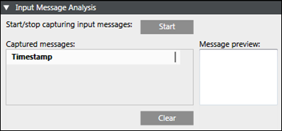
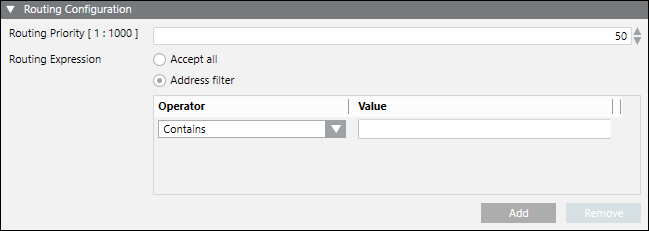

Devices
You can create the devices from Project > Field Networks > [field network], when you click Create in the Network Editor tab.
in the Network Editor tab.
Once created, you can configure the device settings in the Device Editor tab. After configuring devices, you can verify the device status that displays in the Operation tab when you select a device in the System Browser.
For Audio Zone devices (single zone) devices if the connection status displays as Unknown then it indicated that the corresponding Audio Zone is configured and Notification cannot monitor connectivity.
Along with the toolbar controls, the Device Editor tab contains following expanders:
Toolbar | ||
Icon | Name | Description |
| Create | Adds a device under the corresponding device hierarchy. |
| Save | Saves the changes made in the Device Settings and Configuration Properties of the corresponding device. |
| Save As | Saves the corresponding device under a new name. |
Delete | Deletes the selected device. | |


- Device Settings Expander: Displays the description of a device or allows you to modify it.
- Configuration Properties Expander: Displays the properties according to the selected device (see Supported Notification Devices).
Input Message Analysis Expander
This expander displays in the Device Editor tab providing the evaluation results of input messages:

- Start/stop capturing input messages: Allows the start and stop of message capturing.
- Message preview: Displays a preview of the captured message.
- Timestamp: Displays the timestamp of the captured input message, or in absence of a timestamp, the time the input message was received.
- Clear: Deletes all captured input messages.
Routing Configuration Expander
This expander displays in the Device Editor tab when you select ESPA 444 Interface Device, Serial Modem Device, IP GSM Modem Device (Available only for Reno Plus license users).

The Routing Configuration expander has following fields required for the configuration of routing priority and routing expressions for the device:
- Routing Priority: Select the routing priority for the corresponding device. If more than one managed devices of the same type are configured, then based on this priority setting, the managed device is selected sequentially. For verifying whether this device can be used for sending messages to a recipient or not, the routing expression of the managed device must match the address format of the recipient. Select any number from 1 to 1000.
NOTE: A routing priority of 1 will have the highest priority. - Routing Expression: Enter an operator value. This value is evaluated against the recipient user device addresses. If an address matches the value in the routing expression, the message for that recipient user device address gets routed through that intermediate device.
- Accept all: Select to accept any routing expression.
- Address filter: Select to accept only those routing expressions which meet the conditions set under Operator and Value.
- Operator: Select the condition for the routing expression from the drop-down list.
- Value: Enter a suitable value for the selected operator condition.
- Add: Select to add operator and value.
- Remove: Select to remove operator and value.
Operator Conditions for the Routing Expressions
Operator | Description |
Contains | Checks whether the recipient user address string contains the assigned value. If yes, the corresponding message is routed through the device. |
Does Not Contain | Checks whether recipient user address string contains the assigned value. If not, the corresponding message is routed through the device. |
Starts with | Checks whether recipient user address string starts with the assigned value. If yes, the corresponding message is routed through the device. |
Does Not Start With | Checks whether recipient user address string starts with the assigned value. If not, the corresponding message is routed through the device. |
Ends With | Checks whether recipient user address string ends with the assigned value. If yes, the corresponding message is routed through the device. |
Does Not End With | Checks whether recipient user address string ends with the assigned value. If not, the corresponding message is routed through the device. |
Equals | Checks whether recipient user address string is equal to the assigned value. If yes, the corresponding message is routed through the device. This operator performs a character by character match between the recipient user device address and the assigned value. If the recipient user device address is 91-123 and the assigned value is 91123, the corresponding message is not routed through the device. |
Not equals | Checks whether recipient user address string is equal to the assigned value. If not, the corresponding message is routed through the device. This operator performs a character by character match between the recipient user device address and the assigned value. If the recipient user device address is 91-123 and the assigned value is 91123, the corresponding message is not routed through the device. |
Less Than | This operator is evaluated only with numeric values (whole numbers or non-negative integers) of the recipient user device address and the assigned value. You can enter numeric values from 0 to 9,223,372,036,854,775,807 (maximum 64 bits long). If the recipient user device address string contains a character other than digits or a + or - sign, the corresponding message is not routed through the device. This operator performs the mathematical Less Than or Equal To (<=) operation. |
Less Than Or Equal To | This operator is evaluated only with numeric values (whole numbers or non-negative integers) of the recipient user device address and the assigned value. You can enter numeric values from 0 to 9,223,372,036,854,775,807 (maximum 64 bits long). If the recipient user device address string contains a character other than digits or + or - sign, the corresponding message is not routed through the device. This operator performs the mathematical Less Than or Equal To (<=) operation. |
Greater Than | This operator is evaluated only with numeric values (whole numbers or non-negative integers) of the recipient user device address and the assigned value. You can enter numeric values from 0 to 9,223,372,036,854,775,807 (maximum 64 bits long). If the recipient user device address string contains a character other than digits or a + or - sign, the corresponding message is not routed through the device. This operator performs the mathematical Less Than or Equal To (<=) operation. |
Greater Than Or Equal To | This operator is evaluated only with numeric values (whole numbers or non-negative integers) of the recipient user device address and the assigned value. You can enter numeric values from 0 to 9,223,372,036,854,775,807 (maximum 64 bits long). If the recipient user device address string contains a character other than digits or + or - sign, the corresponding message is not routed through the device. This operator performs the mathematical Less Than or Equal To (<=) operation. |
Regular expression | This operator is used to evaluate recipient device address with regular expression given in the assigned value string. |
Examples of Regular Expressions
Regular Expressions | Description |
^\d+ | String starts with one or more digits only. |
^[+](91) | String should start with +91. |
^.+?\d$ | String ending with digits only. |
^[0-9]{10}(52|56|57)$ | String is 12 digits long (numbers only) and ends with 52, 56, or 57. |
^9881231231$ | Matching exact mobile number. |